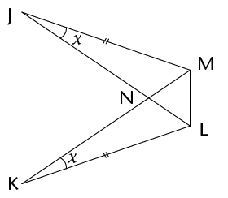
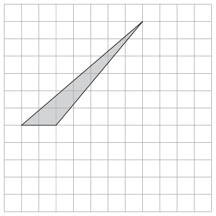

<div class="container">
  <div id="contents" class="col-md-12 main-content"><h1 xmlns="http://www.w3.org/1999/xhtml" id="toc-id-8">Assessering</h1>

    <li xmlns="http://www.w3.org/1999/xhtml" class="ques-a--with-marks">
<ol><li>Konstrueer driehoek RST met RS = 7,3 cm, \(\hat{R}\) = 42\(^\circ\); en \(\hat{S}\) = 67\(^\circ\).
<hr/></li><li><p class="ques-a-"><span>Konstrueer die halveerlyne van elk van die hoeke van die driehoek wat jy in (a)
	
geteken het. Jy behoort te vind dat hulle deur ’n gemeenskaplike punt gaan.</span></p>
<hr/></li>   <li class="ques-a--with-marks">Met die gemeenskaplike snypunt van die halveerlyne wat jy in (b) gekonstrueer
	
het as middelpunt, konstrueer ’n sirkel wat al drie sye van die driehoek raak.
	
Gebruik jou passer om die sirkel te trek. </li>

   

    <li class="ques-a--with-marks">Is dit altyd moontlik om ’n driehoek te teken as die lengte van een van die sye
	
gegee word en die groottes van die twee hoeke wat aangrensend aan daardie sy
	
is, gegee word (soos byvoorbeeld in vraag 1(a) gedoen is)? Verduidelik jou
	 antwoord.

    </li><li class="ques-a--with-marks">Konstrueer ’n hoek van 150\(^\circ\)sonder om ’n gradeboog te gebruik.	<hr/></li>
   <li class="ques-a--with-marks">Mthunzi dink aan ’n vierhoek en gee vir Sam dié leidraad: “Die hoeklyne sny
	
mekaar loodreg, maar die sye is nie almal ewe lank nie.” Help vir Sam deur die
naam van die figuur neer te skryf. <hr/></li>
   <li class="ques-a--with-marks">Kyk na die figuur hier onder. Skryf ’n vergelyking neer en gebruik dit om die
	
waarde van
    \(x\) te bepaal. <hr/></li>
    </ol><p class="Body-no-indent para-style-override-7">
    <span></span> </p>
</li>

    <li xmlns="http://www.w3.org/1999/xhtml" class="Body-investigation">Kyk na die diagram hier regs.
<ol><li class="ques-a--with-marks">Bewys dat \(\triangle\)JNM
    <span class="char-style-override-4">\(\equiv\)</span>
    \(\triangle\)KNL.    <div class="frame-35"></div></li>


    <li class="ques-a--with-marks">Is daar genoeg inligting om te bewys dat \(\triangle\)JLM <span class="char-style-override-10">\(\equiv\)</span>
    \(\triangle\)KML? Verduidelik jou
	 antwoord. 
    <hr/></li><li class="ques-a-">Kyk na die diagram hier regs.<p class="ques-a--with-marks">Gegee: \(\triangle\)CDE
    <span class="char-style-override-4">\(\equiv\)</span>
    \(\triangle\)FCG, Bewys dat ED \(||\) GF. Gee redes vir alle bewerings.   </p></li>

    


    </ol></li>


    <li xmlns="http://www.w3.org/1999/xhtml" class="Body-investigation">In die diagram hier onder stel al die getalle lengtes van sye voor.

    <p class="Body-no-indent"><span></span> </p>
<ol><li class="ques-a--with-marks">Verduidelik kortliks hoekom
    \(\triangle\)ABF \(|||\) \(\triangle\)ACD (volle bewys nie vereis nie). <hr/></li>
   <li class="ques-a--with-marks">Gebruik die gelykvormigheid van die driehoeke om die lengte van die volgende
	
lynstukke te bepaal (afgerond tot een desimale plek): 
<ol><li>
    \(x\)    <hr/></li>
<li>\(y\)<hr/></li></ol></li></ol></li>

    <li xmlns="http://www.w3.org/1999/xhtml" class="ques-a--with-marks">Kyk na die diagram. Bepaal, met redes, die grootte van \(\hat{U}\) in terme van \(x\).

    <div class="frame-35"></div>
    <hr/></li><li xmlns="http://www.w3.org/1999/xhtml" class="ques-a--with-marks"> Kyk na die diagram hier regs.
    MK = ML. Bepaal met redes, die waarde van
     \(z\) .    <div class="frame-35"></div></li>


   <li xmlns="http://www.w3.org/1999/xhtml" class="ques-a--with-marks">Is AC \(||\) DF?
   Motiveer deur jou antwoord te bewys.    <div class="frame-35"></div>
</li>


   <li xmlns="http://www.w3.org/1999/xhtml" class="Body-investigation-hanging">Kyk na die diagram hier langsaan. QRST is ’n
reghoek. Alle getalle stel lengtes van sye voor.

    <div class="frame-35"></div>
<ol><li class="ques-a--with-marks"> Bereken die lengte van UT.
    
    <hr/></li><li class="ques-a--with-marks">Bereken die omtrek van driehoek TUV, afgerond tot een desimale plek.<hr/></li>
    </ol></li>


    <li xmlns="http://www.w3.org/1999/xhtml" class="ques-a--with-marks"> ’n Reghoek se oppervlakte is
    \(6a^{2}\) en sy omtrek is \(10a\). Bepaal sy dimensies in terme van \(a\). </li>
   <li xmlns="http://www.w3.org/1999/xhtml" class="ques-a--with-marks">Teken, op die rooster hier onder, ’n parallelogram met dieselfde oppervlakte as
hierdie driehoek. 
    <p class="Body-investigation-hanging"><span></span> </p></li>


    <li xmlns="http://www.w3.org/1999/xhtml" class="Body-investigation-hanging">Die omtrek van ’n ruit is 60 cm, en die lengte van een van sy hoeklyne is 24 cm.
<ol><li class="ques-a--with-marks">Bereken die lengte van ’n sy van die ruit.	 <hr/></li>
   <li class="ques-a--with-marks">Bewys dat die ruit se oppervlakte 216 cm<sup>2</sup> is.
  <hr/></li>
    </ol></li>
    
  </div>
</div>